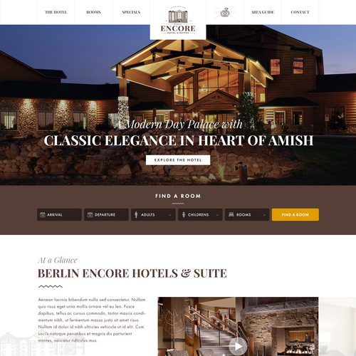
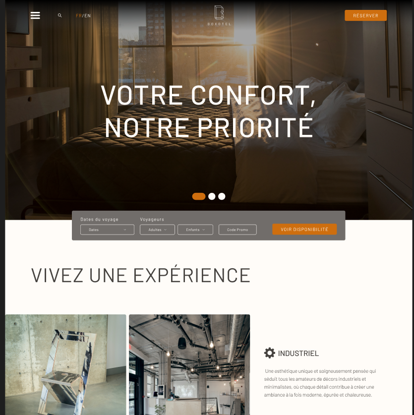
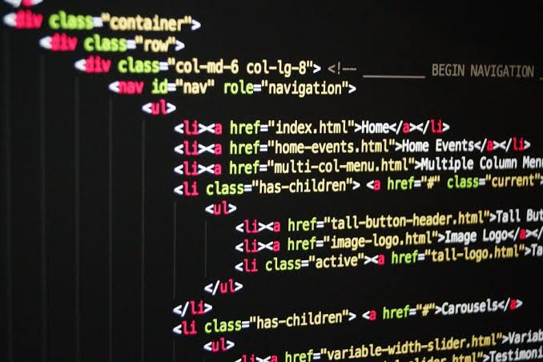
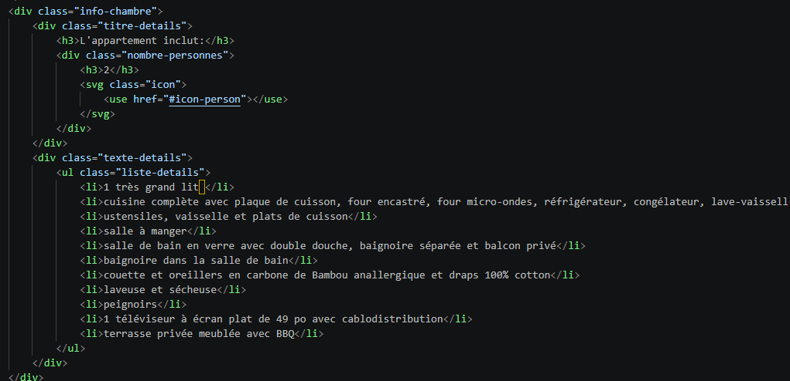
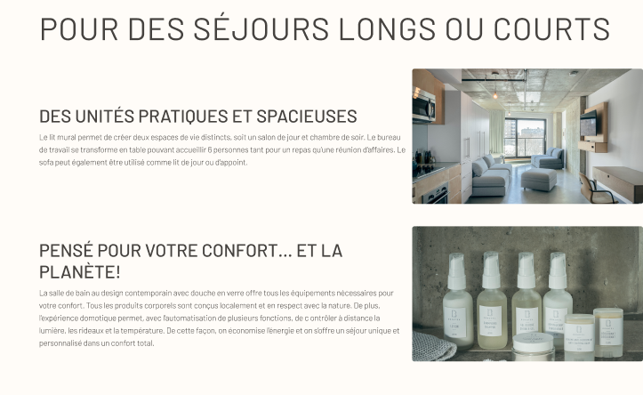

2026
Conception Web
HTML
CSS
JavaScript
Scolaire
Ce projet est une refonte d'un site pour l'hôtel Boxotel. Il fallait refaire toute la mise en page, le design et l'expérience utilisateur, mais avec quelques contraintes. On devait garder les images, le contenu, les couleurs et les pages différentes du site.
Intégration Web : Simon Savard-Blondel
Design : Magalie Cyr
Contenu : Boxotel
Aucune IA a été utilisée pendant la réalisation de ce projet.
01/05 -
Le design est inspiré par d'autres sites d'hôtels dans lesquels les images parlent plus que le texte. Plusieurs carrousels et cartes dont l'image prend toute la place se retrouvent dans le site pour attirer l'oeil vers ceux-ci.

02/05 -
À l'aide de ma collègue, nous avons finalisé le design visuel en prenant quelques morceaux de nos deux designs pour le design final.

03/05 -
Avant de commencer officiellement l'intégration, j'importe toutes les composantes JavaScript dont j'aurai besoin pour le site. Je créé aussi toutes les pages HTML et les paramètres de couleurs et typographies qui seront utilisés à travers le projet.

04/05 -
Quand le design est fini et qu'on est prêt pour l'intégration, je commence à intégrer avec ma collègue. On fait l'entête et le pied de page dans des HTML différents pour les incruster dans les autres pages sans avoir à recopier le même code partout. On fait aussi la version mobile et tablette du site pour une meilleure accessibilité.

05/05 -
Après la finition du HTML et du CSS, on regarde pour quelques bogues et erreurs à travers le site. Lorsque tout est bon, on s'attaque à la dynamisation du site. L'entête a une meilleure animation d'entrée en mode tablette et mobile et le texte apparait en fade-in.

Le plus gros défi est le fait que c'était notre premier projet d'intégration web en équipe. Il pouvait donc y avoir quelques problèmes, comme un conflit sur GitHub ou un manque de communication.
Nous nous sommes dit qu'on devrait se répartir les pages pour éviter les conflits le plus possible. S'il fallait qu'on aille sur une page de l'autre, on se demandait si on avait des changements qui n'avaient pas été envoyés à GitHub avant d'y aller.
J’ai appris que travailler en équipe avec GitHub sur des fichiers textuels comme HTML et CSS est beaucoup plus facile que je ne le pensais.